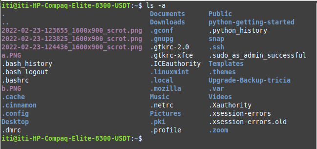

When you first login, your current working directory is called your "home" directory and it is where your personal files and subdirectories are saved. In most Linux systems, this would look like /home/jobartucz (but replace it with your personal username (probably not jobartucz)). On the system we are using, for this class your username is probably iti (unless you did something different when setting up) so the home directory is /home/iti.
We are going to store all of our files in a directory called unixstuff that we will create.
To make sure you are in the correct directory, use the "cd" command to "change directory". The ~ (or "tilda") is a shortcut for "my home directory". In your terminal, type
% cd ~
To find out what is in your home directory, use the "ls" command to list files. In your terminal, type
% ls
The ls command lists the contents of your current working directory.
There are probably a few files listed, which may or may not be the same as the picture above
ls does not, in fact, cause all the files in your home directory to be listed, but only those ones whose name does not begin with a dot (.) Files beginning with a dot (.) are known as hidden files and usually contain important program configuration information. They are hidden because you should not change them unless you are very familiar with UNIX!!!
To list all files in your home directory including those whose names begin with a dot, type
% ls -a
This shows that there are a lot of "hidden" files and folders that you only see when you force the ls command to show ALL files by using ls -a
ls is an example of a command which can take options: -a is an example of an option. The options change the behaviour of the command. There are online manual pages that tell you which options a particular command can take, and how each option modifies the behaviour of the command. (See later in this tutorial)
We will now make a subdirectory in your home directory to hold the files you will be creating and using in the course of this tutorial. To make a subdirectory called unixstuff in your current working directory type
% mkdir unixstuff
The command will NOT return anything at all if it is successful. If there's an error, ask Mr. Bartucz for help!
To see the directory you have just created, type
% ls
You should see your new directory, congratulations!!!
The command cd directory means change the current working directory to 'directory'. The current working directory may be thought of as the directory you are in, i.e. your current position in the file-system tree.
To change to the directory you have just made, type
% cd unixstuff
Type ls to see the contents (which should be empty, so it will not print anything)
Make another directory inside the unixstuff directory called backups
When you have created the directory inside unixstuff, take a screenshot and paste it into the assignment in Google Classroom
Still in the unixstuff directory, type
% ls -a
As you can see, in the unixstuff directory (and in all other directories), there are two special directories called (.) and (..)
In UNIX, (.) means the current directory, so typing
% cd .
NOTE: there is a space between cd and the dot
means stay where you are (the unixstuff directory).
This may not seem very useful at first, but using (.) as the name of the current directory will save a lot of typing, as we shall see later in the tutorial.
(..) means the parent of the current directory, so typing
% cd ..
will take you one directory up the hierarchy (back to your home directory). Try it now.
Note: typing cd with no argument always returns you to your home directory. This is very useful if you are lost in the file system.
Pathnames enable you to work out where you are in relation to the whole file-system. For example, to find out the absolute pathname of unixstuff just make sure you are still in that directory and then type
% pwd
The full pathname will look something like this -
/home/iti/unixstuff
Use the commands ls, pwd and cd to explore the file system. You can't break anything so try whatever you can think of.
(Remember, if you get lost, type cd ~ by itself to return to your home-directory)
First type cd ~ to get back to your home-directory, then type
% ls unixstuff
to list the conents of your unixstuff directory.
Now type
% ls backups
You will get a message like this -
backups: No such file or directory
The reason is, backups is not in your current working directory. To use a command on a file (or directory) not in the current working directory (the directory you are currently in), you must either cd to the correct directory, or specify its full pathname. To list the contents of your backups directory, you must type
% ls unixstuff/backups
Home directories can also be referred to by the tilde ~ character. It can be used to specify paths starting at your home directory. So typing
% ls ~/unixstuff
will list the contents of your unixstuff directory, no matter where you currently are in the file system.
What do you think
% ls ~
would list?
What do you think
% ls ~/..
would list?
ls |
list files and directories |
ls -a |
list all files and directories |
mkdir |
make a directory |
cd directory |
change to named directory |
cd |
change to home-directory |
cd ~ |
change to home-directory |
cd .. |
change to parent directory |
pwd |
display the path of the current directory |


M.Stonebank@surrey.ac.uk, © 9th October 2000